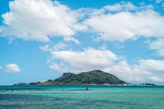
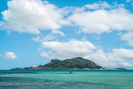

Principales atracciones de la Isla de Jeju
- Volcán Hallasan: el pico más alto de Corea del Sur.
- Manjanggul Cave: uno de los tubos de lava más largos del mundo.
- Playa Hyeopjae: famosa por su arena blanca y aguas cristalinas.
- Parque Nacional Hallasan: ideal para senderismo y naturaleza.
- Jardín Botánico Yeomiji: un jardín tropical en el corazón de Jeju.
Galería de imágenes

 
